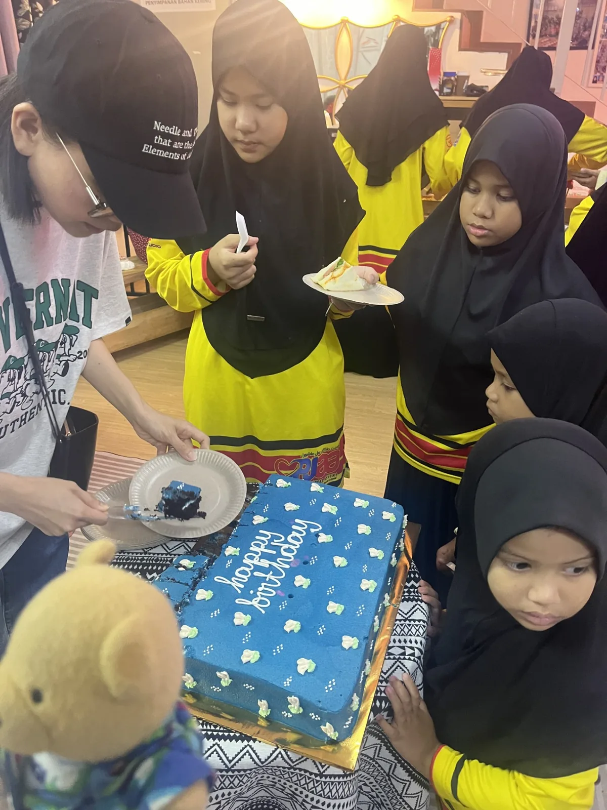
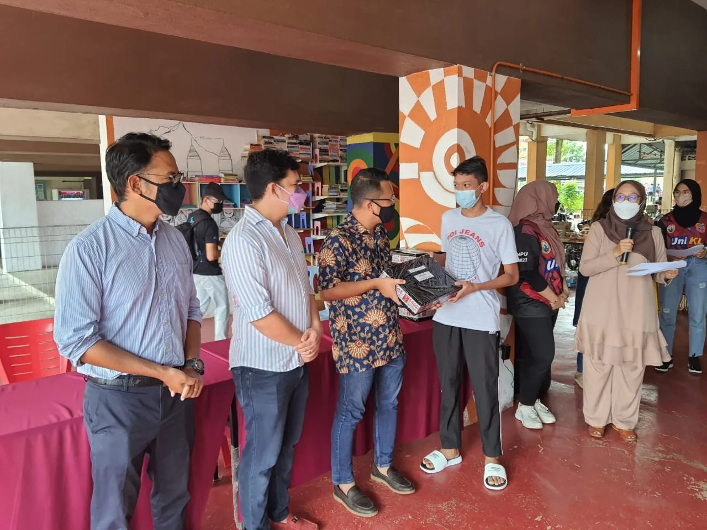

Education
Track scholarships, bursaries, laptops and student support.
IMPACT
Some of YTAH’s work is visible in awards and institutions. Other work is deliberately quiet. Together, they reflect thirty years of continuing purpose.
Cash bursaries and laptops granted to approximately 170 undergraduate Law students since 2010.
A long-running annual commitment to recognise the Best Overall Student in the Certificate in Legal Practice examinations.
The current cash value of the Best Overall Student prize sponsored by the foundation.
From the foundation’s establishment on 9 November 1996 to its thirtieth anniversary in 2026.



WHAT IMPACT MEANS HERE
YTAH’s public records provide clear figures for some programmes. For other forms of assistance, particularly Small Steps, the foundation intentionally avoids turning private acts of charity into a public scoreboard.
Track scholarships, bursaries, laptops and student support.
Record prizes, recipients and long-term institutional partnerships.
Describe the nature of support while protecting the dignity of recipients.
“Not every act of charity needs an audience.”
Small Steps keeps donation publicity and photography to a minimum by design.
Our approach to Small Steps ↗